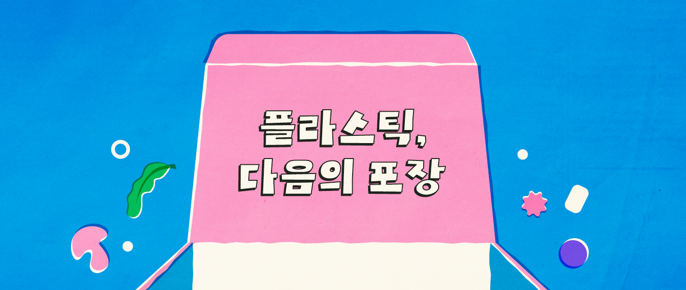
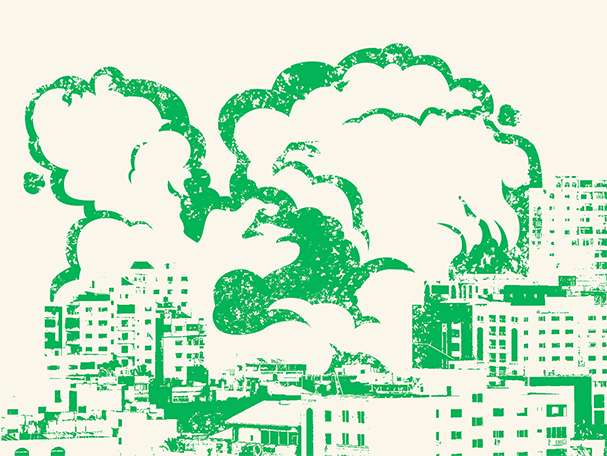
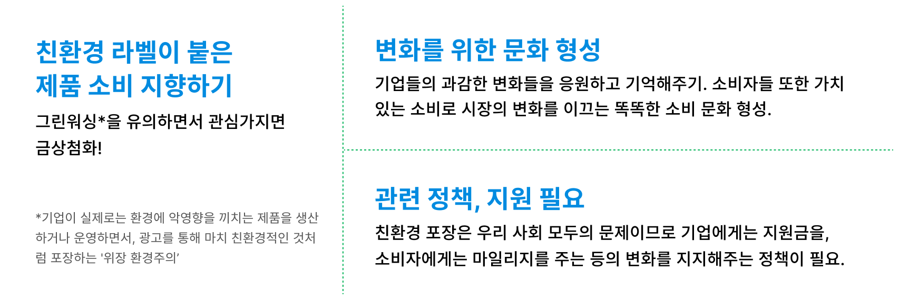

PLA
Polylactic Acid
옥수수나 사탕수수 등 식물 유래원료로 만들어짐. 현재 상업적으로 가장 널리 사용되는 플라스틱.

컵, 트레이, 포장재, 식기, 3D프린팅 등

최근 식품업계에서는 중동 전쟁으로 인해 플라스틱 재료 수급이 어려워져 포장재 제작이 힘들어진다는 소식이 이슈가 되었습니다. 동시에 플라스틱 소비를 줄여야한다는 목소리가 증가하고 있으나, 현실적인 문제(비용, 설비 등)를 이유로 기업 입장에서 도입하기가 쉽지 않은 상황입니다.
미래와 환경을 위해 플라스틱을 대체할 방법을 찾을 필요가 있습니다.
긍적적이게도 이미 많은 곳에서 변화의 움직임은 시작되고 있는데요.
플라스틱, 그 다음의 포장은 어떻게 발전할 수 있을까요?

이미 우리나라 기업들도 환경을 위한 다양한 포장과 정책을 시도하고 있습니다.


Polylactic Acid
옥수수나 사탕수수 등 식물 유래원료로 만들어짐. 현재 상업적으로 가장 널리 사용되는 플라스틱.
컵, 트레이, 포장재, 식기, 3D프린팅 등
Polyhydroxyalkanoates
미생물 발효 기반의 원료로 만들어짐.
토양뿐만 아니라 바다에서도 100% 분해되는
차세대 친환경 플라스틱.

의료, 특수포장, 농업용 필름 등
Polybutylene Adipate-co-Terephthalate
매립 시 6개월 이내 90% 이상 분해되는 석유 기반 친환경 생분해성 플라스틱.

일회용 비닐봉투, 농업용 필름, 포장재 등
이런 소재들은 기존 플라스틱보다는 친환경적이지만, 특정 산업용 퇴비화 조건(고온·고습)이 충족되어야 분해된다는 한계가 있습니다.
생분해 소재들보다 상용화가 힘들고 아직 연구가 더 필요하지만,
포장재 자체가 식용, 비료가 될 수 있는 소재들이 있습니다.
이처럼 우리가 모르는 곳에서 친환경 소재에 대한 연구와 변화가 계속 되고 있습니다.
그렇다면 일반 소비자인 우리가 할 수 있는 일은 무엇일까요?
